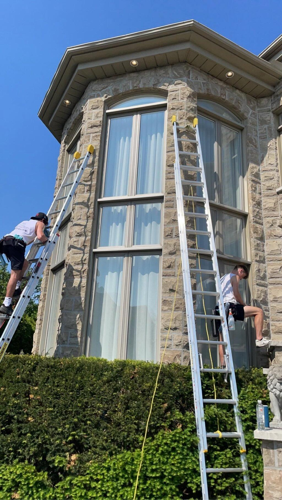
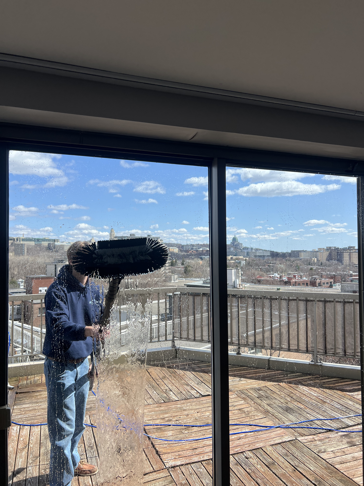

Lavage de vitres
Lavage professionnel
des vitres
Afin de redonner leur éclat à vos fenêtres, nous effectuons notre travail avec savoir-faire et précision. Aucune trace ne sera laissée.
Vos cadres et vos vitres se métamorphoseront pour obtenir un aspect se rapprochant le plus possible du neuf. Nous offrons le nettoyage extérieur à l'eau déionisée ainsi que le nettoyage intérieur à la main.
Nettoyage extérieur à l'eau déionisée — zéro minéraux résiduels
Nettoyage intérieur à la main, avec soin pour chaque surface
Cadres, vitres et rainures — service complet sans compromis
Résultat garanti impeccable — aspect proche du neuf



Des vitres impeccables !